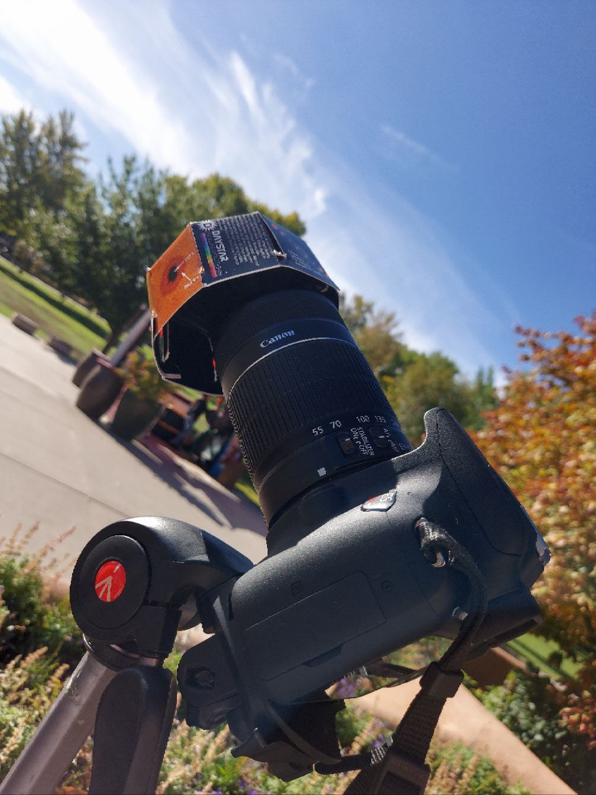
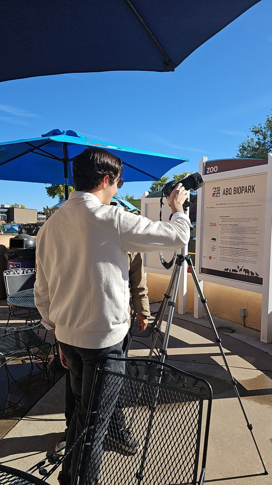
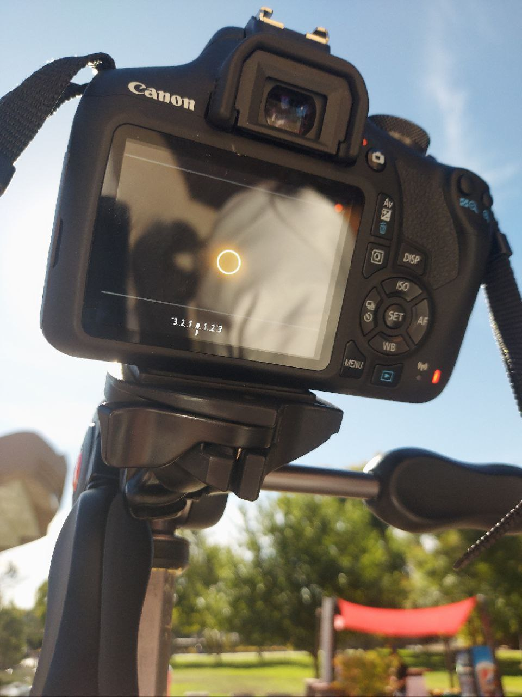

October 14, 2023.
I set up my gear next to table outside Albuquerque's Zoo's Cottonwood Cafe:
For all the pictures and videos I took, I used my Canon EFS 55-250mm lens along with a DayStar 70mm White-Light Universal Lens Solar Filter. The zoo's grounds provided a clear view of the sky along with an uncrowded space to put my gear out.
For safety reasons, I limited my preview of the camera's field of view to the LCD screen (rather than using the optical viewfinder).
